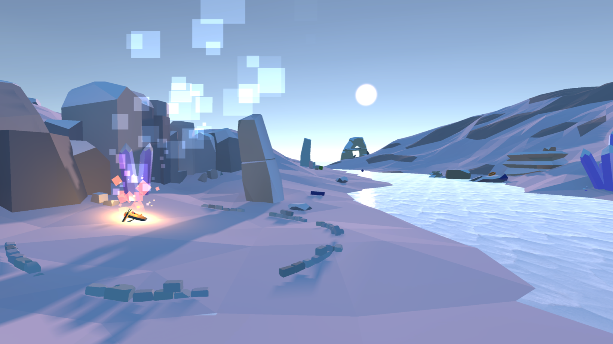
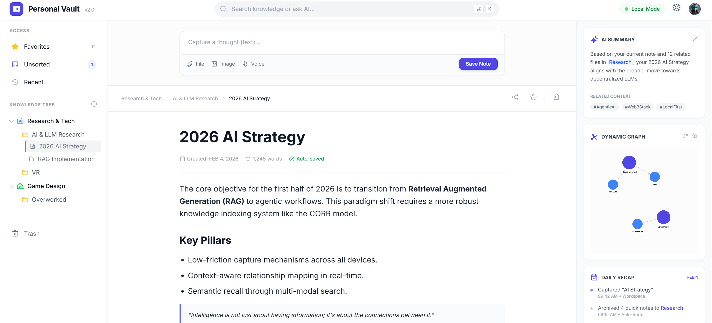
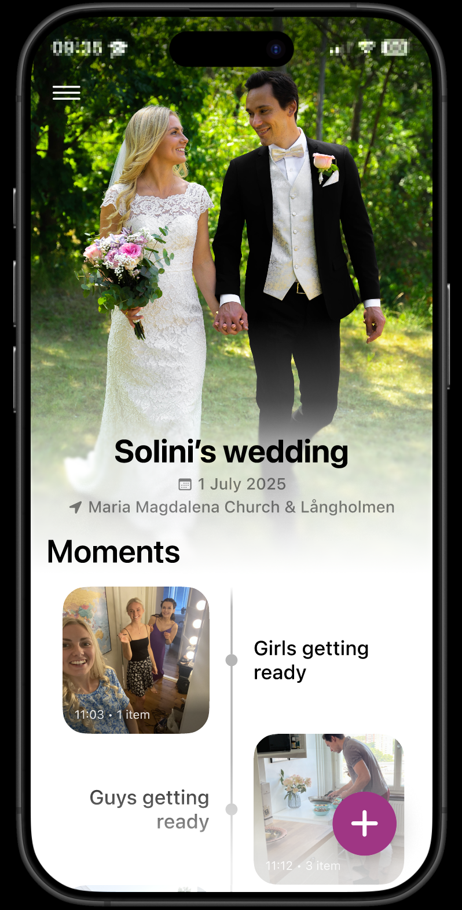
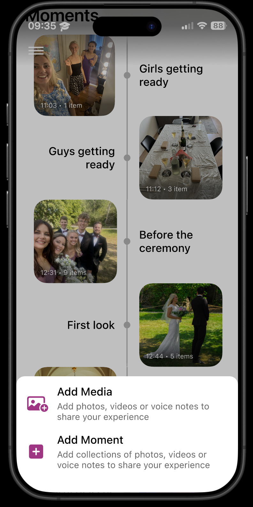
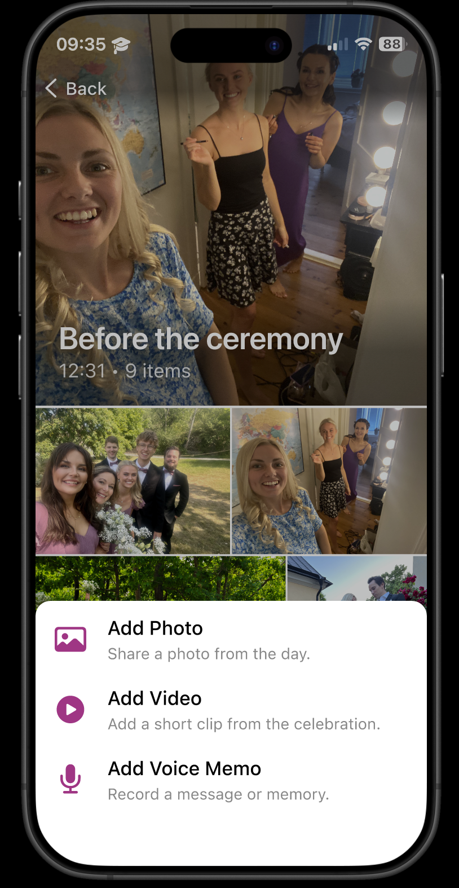
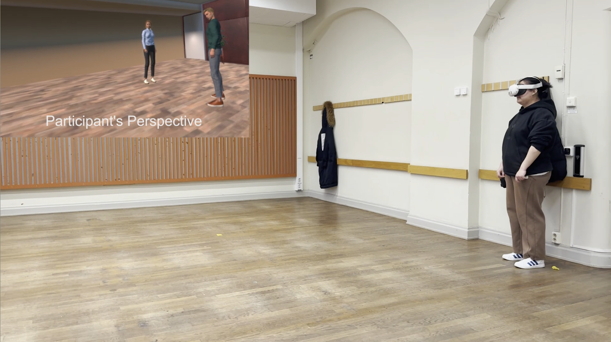

瑞典皇家理工学院 · 交互媒体技术
随着自动化和AI重塑城市空间，未来城市的声音环境将发生深刻变化。本项目开发了一款基于VR的交互系统"Sound Canyon"，以"声音积木"为隐喻，让用户通过拾取、组合虚拟积木，主动构建自己理想中的未来城市声景，并在互动中反思个人对自然、技术、社会声音的价值观。
• 前期用户研究（N=10）：选取自然、社会、技术三类共20段声音，通过愉悦度排序、声音-形状匹配及访谈，筛选出15个核心声音，并建立声音与视觉符号的映射。结果显示：自然声音（鸟鸣、流水）最受欢迎；声音-形状匹配存在两种路径——语义联想（如儿童玩耍→桥形）和声学特征映射（如鸟鸣高频→锥形）。 • VR原型设计：在Unity中构建"声音峡谷"场景，用户沿河流路径探索橙色（愉悦）、绿色（中性）、蓝色（不愉悦）的声音积木，通过手柄拾取、拖拽，并在终点组装属于自己的未来城市声景。采用低多边形风格和空间音频增强沉浸感。 • 用户测试（N=8）：验证了积木隐喻的直观性与3D音频的沉浸效果。
• 建立了基于用户共识的声音-形状-颜色映射规则，为VR视听协同设计提供实证基础。 • 实现了从"被动评估"到"主动构建"的转型：积木式操作降低了认知负荷，空间音频增强了在场感。 • 验证了"日常聆听"理论：人们听的是声音所代表的事件（如"战争""童年"），而非物理参数；声景设计应基于叙事意义。

用户常陷入"分类强迫症"，纠结笔记该放哪，最终仍靠关键词搜索，知识难以形成逻辑关联。针对这一"知识孤岛化"痛点，本项目开发了一款本地优先的知识库应用，利用AI技术从"存、管、用"三阶段重构流程，降低归档成本、增强关联感知、提升召回价值。
• 痛点发现：通过用户访谈与竞品分析，识别出三类核心问题——归档决策焦虑（不知道该存哪）、关联隐晦（笔记孤立无连接）、搜索价值有限（关键词匹配无法理解语义）。 • 原型设计：设计三栏布局，并集成三大AI功能：智能归档（LLM向量匹配推荐路径）、语义图谱（Embedding聚类可视化）、内生式RAG搜索（私有库+大模型生成答案）。 • 可用性测试：初期版本采用全局全量图谱，用户测试发现当知识点超过50个时，"知识图谱"变成视觉噪音，难以定位有效信息。 • 迭代优化：参考"由粗到细"认知模型进行两次关键迭代： 1. 语义缩放：全局视角仅展示大类聚合节点（Cluster Nodes），用户先感知知识分布比例，不被细节淹没。 2. 层级下钻：点击感兴趣的大类后，图谱动态加载该领域细分节点，实现从宏观到微观的渐进式披露。迭代后，图谱从"装饰性背景"转变为"具有导航功能的交互索引"，用户反馈宏观到微观的推进感能更好地梳理知识逻辑。

婚礼是一个充满情感与连接的仪式，但新人常面临两难：想要全心投入、不被手机干扰，又希望留住那些稍纵即逝的瞬间。本项目旨在设计一个共创平台，让宾客以自己的方式捕捉婚礼中的"小、有爱、混乱"的时刻，事后共同构建一条多视角的婚礼时间线，帮助新人真正"在场"，同时不丢失任何珍贵的记忆。
• 发现阶段：通过文献综述和半结构化访谈（7位近五年内结婚的参与者），发现宾客拍摄的照片具有专业摄影无法替代的情感价值，而新人普遍希望避免过度记录带来的干扰。 • 定义阶段：基于亲和图分析，提炼出POV："结婚的新人需要以自发、参与式的方式捕捉婚礼瞬间，因为替代性的记录方法有助于保留情感细节与氛围"，并形成HMW问题："如何在最小干扰下捕捉人与人之间的小、有爱、混乱的瞬间？" • 构思与原型：采用"最差想法"方法引导创意，筛选出"时间线"为核心概念。经过并行设计、低保真原型评估（4位用户）及迭代，最终开发高保真移动应用原型，并再次评估（3位新人+4位宾客）。



• 设计了一款名为"Wedding Moments"的移动应用：宾客可在婚后上传照片、视频、语音，加入预设或新建的"时刻"；新人可自定义主题色、欢迎语，并预置希望被捕捉的关键时刻。 • 时间线以"时刻"为单位呈现，支持多视角内容汇聚，将零散的拍摄转化为多层次的集体叙事。

随着虚拟代理在VR中的普及，理解人如何加入小型对话群体变得至关重要。本研究聚焦于虚拟代理的礼貌策略（言语与非言语）以及用户的空间起始位置对群体加入行为的影响。参与者进入一个基于社会困境的VR场景，需要在"物理效率"与"社交空间规范"之间做出权衡，探讨不同策略和位置如何影响服从性、规范遵守程度及用户主观感知。
• 实验设计：采用4（礼貌策略：无、间接、积极、直接）×3（起始位置：中心、中间、侧向）的组内设计，21名参与者完成12个试次。场景中两个虚拟代理形成F-构型，参与者需响应邀请并选择加入路径：便捷路线（近侧）、违规路线（穿过o-space）、不便但符合规范的绕行路线。 • 数据采集：记录路径选择（说服力）、是否穿过o-space（规范遵守）、行走时长、每次试次后的Likert量表（清晰度、冒犯感、友好度、自由感），并监测心率。 • 关键变量：直接策略（"Come here！"+指指点点）、积极策略（"Would you like to come here？"+手掌侧摆）、间接策略（"Welcome back！"+手掌上翻）、无策略（无言语无手势）。
• 直接策略说服力显著最强，积极策略次之，无策略最弱。 • 社交规范几近崩溃：仅6.9%的试次选择绕行，中心起始位置下100%穿过o-space，远低于先前研究的75%。 • 直接策略最清晰但最冒犯，积极策略最友好且自由感最高；起始位置对主观评价无显著影响。
本研究揭示了VR中社交规范的脆弱性：礼貌策略不足以引导行为，清晰度才是服从的关键，积极策略可作为平衡友好与有效的折中方案。这些发现为虚拟角色动画库开发提供数据支撑（动画库见视频）。